Čistý interiér
od49€
- Vysávanie celého interiéru
- Čistenie palubnej dosky a plastov
- Umytie okien zvnútra
- Voňavka na záver
Žlté, zmatnené alebo poškriabané svetlomety renovujeme do továrníckej kondície. Bezpečnejšia jazda v noci. Lepší výzor auta. Bez nutnosti meniť svetlá za nové.


Žiadne prekvapenia. Cena vám sedí pred prácou, nie po nej.
Auto si prevezmem, spoločne prejdeme stav laku, svetiel a interiéru. Poviem, čo má zmysel a čo nie.
Konkrétna cena s rozpisom služieb a časom dokončenia. Bez skrytých príplatkov za väčšie vozidlá.
Profesionálne stroje a chémia. Krok po kroku — svetlá, lak, interiér, ochrana. Bez kompromisov.
Kontrola spolu s vami. Ak treba, vyzdvihnutie aj do 5 dní. Po dohode aj cez víkend.
Všetky fotky nižšie sú zo skutočných realizácií Romana Sabola. Potiahnutím za rúčku porovnáte stav pred a po.
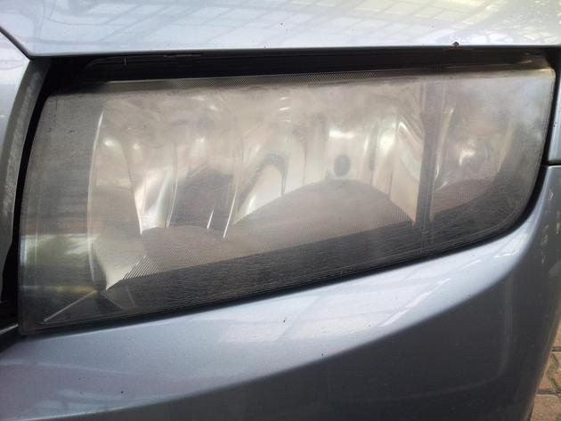
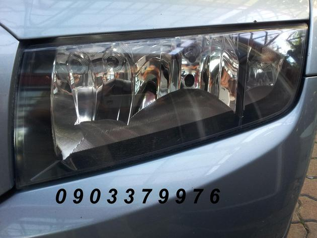
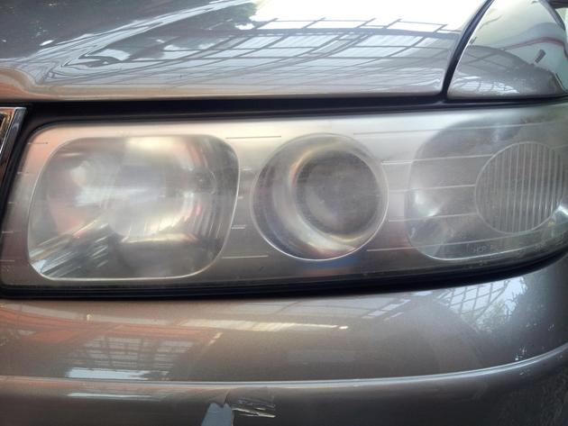
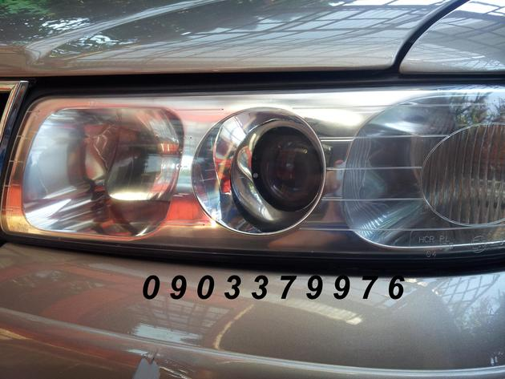
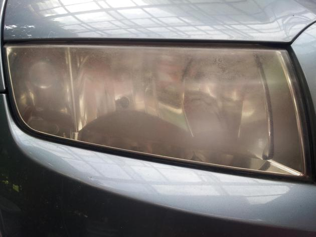
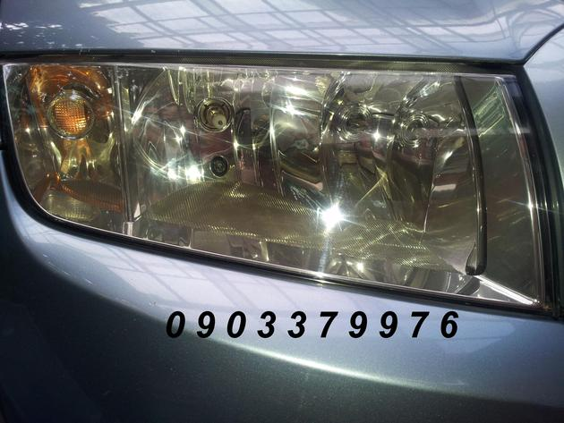
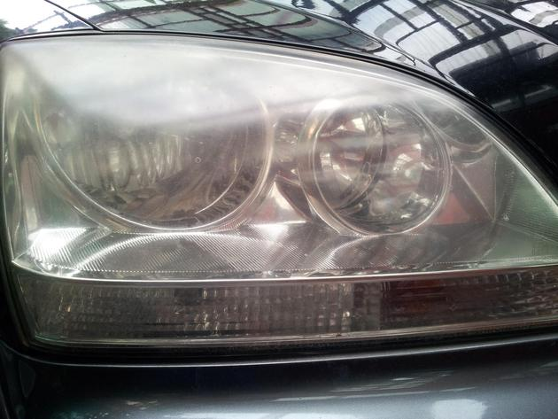
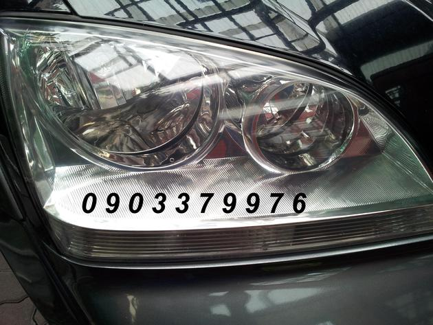
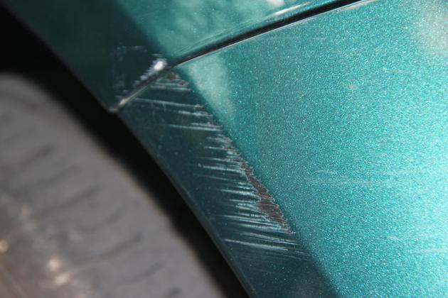
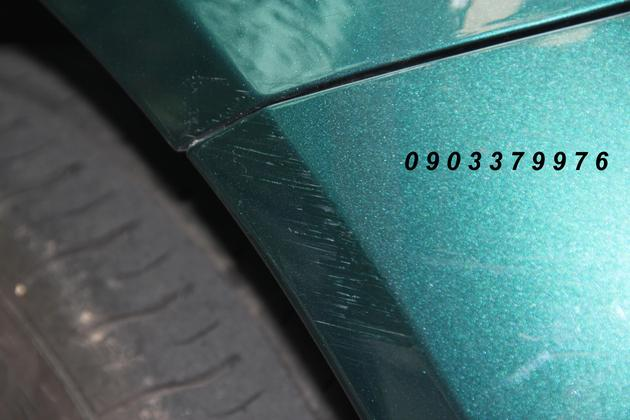
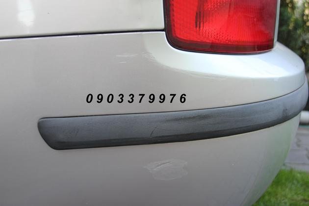
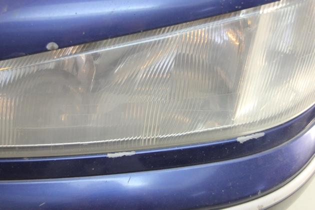
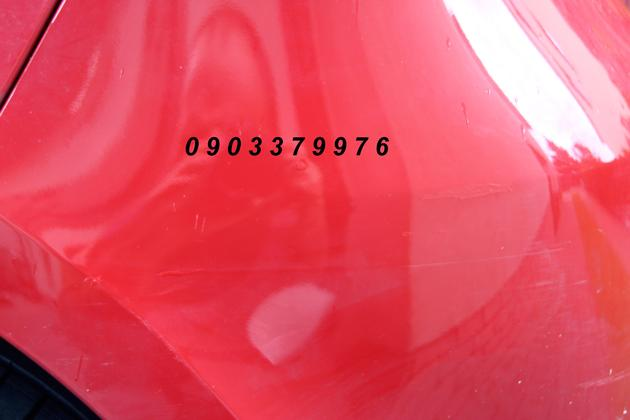
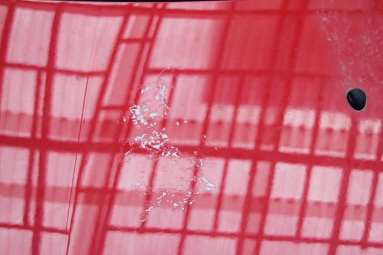
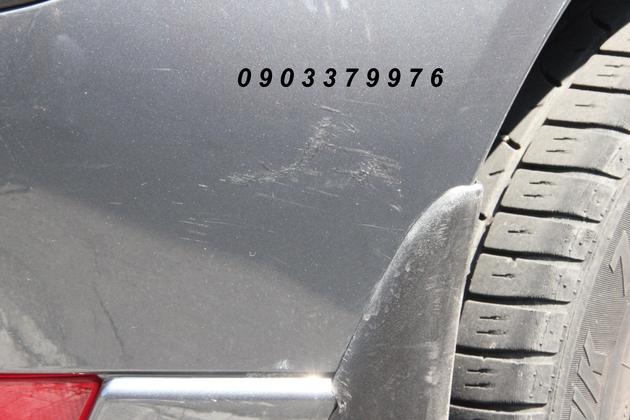
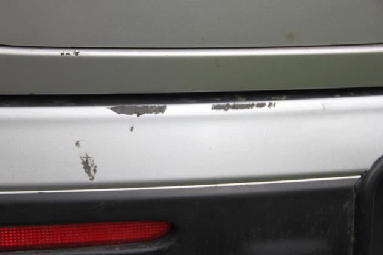
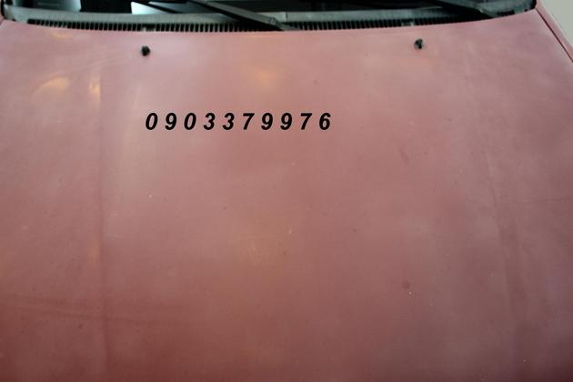
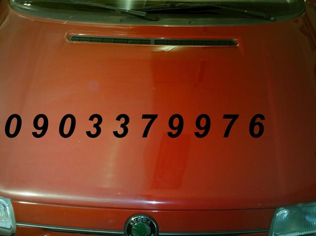
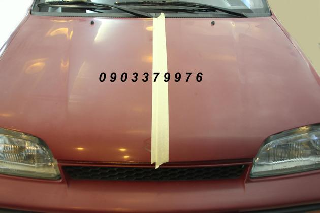
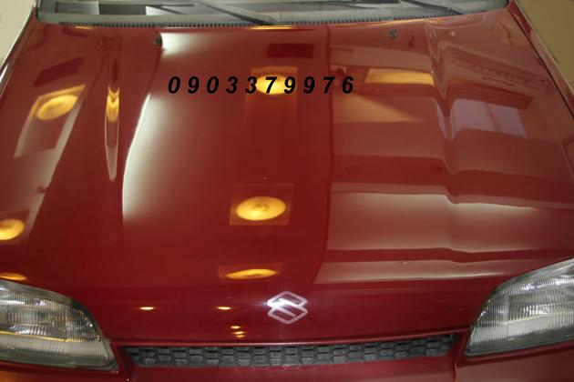
📷 Toto je len výber — Roman má v archíve vyše 80 párov pred/po svetlometov a desiatky leštení. Plnú galériu rád ukáže osobne v dielni.


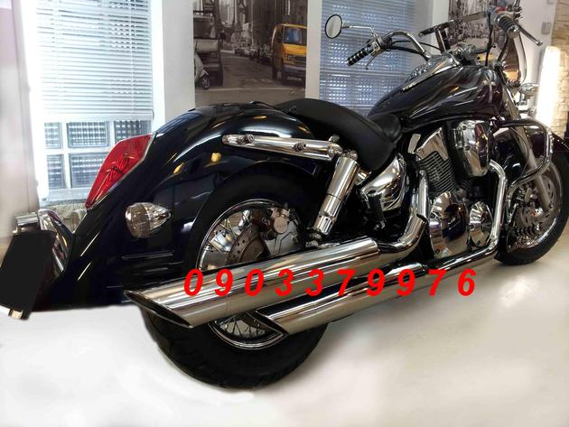
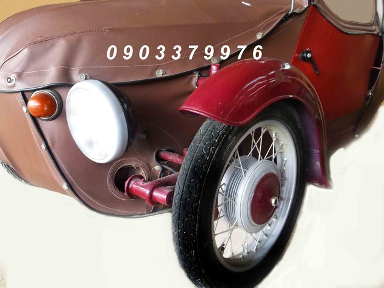
Pre tých, ktorí chcú jasnú cenu a kompletný výsledok.
Roman Sabol sa autodetailingu venuje od roku 1999. Žiadne franšízy, žiadni brigádnici — každé auto si beriete priamo od človeka, ktorý ho čistil. Práca, na ktorú sa môžete spoľahnúť pri rodinnom kombíku, firemnom SUV aj pri veteránovi.
Najrýchlejšie cez telefón. Volajte, napíšte SMS, alebo zastavte priamo v dielni.
0903 379 976